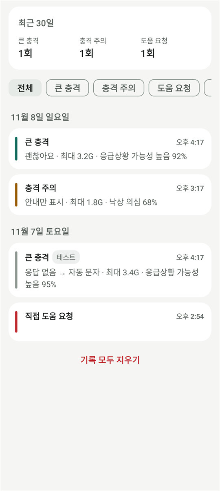
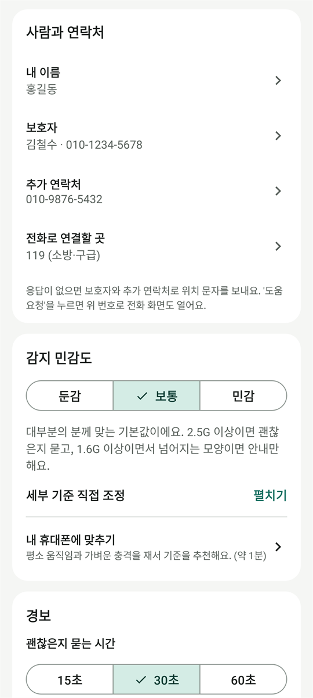

안드로이드 앱 · 무료
넘어지면
보호자에게 알려 드려요
휴대폰 센서로 넘어짐과 큰 충격을 감지해요. 먼저 괜찮은지 묻고, 응답이 없으면 보호자에게 지금 있는 곳을 문자로 보내요.
설치 파일 내려받기이 앱은 안드로이드 휴대폰 전용이에요.
휴대폰 카메라로 QR 코드를 찍으면 이 페이지가 열려요. PC에서 내려받아 휴대폰으로 옮겨 설치해도 돼요.

이렇게 지켜 드려요
-
큰 충격 감지
떨어지는 움직임, 충격 크기, 충격 뒤 자세와 움직임을 함께 봐요. 화면이 꺼져 있어도 감지해요.
-
괜찮은지 확인
경보음과 진동으로 30초 동안 물어요. '괜찮아요'를 누르거나 "괜찮아"라고 말하면 꺼져요.
-
보호자에게 알림
응답이 없으면 보호자에게 주소와 지도 링크가 담긴 문자를 보내요. 119에 바로 전화할 수도 있어요.
화면 둘러보기




설치 방법
- 설치 파일 내려받기
휴대폰에서 이 페이지를 열고 '설치 파일 내려받기'를 눌러요. "그래도 다운로드할까요?" 같은 안내가 나오면 '다운로드'를 눌러요.
- 파일 열기
다운로드가 끝나면 '열기'를 누르거나, '내 파일 → 다운로드'에서 ai-shock-alert.apk를 눌러요.
- 설치 허용하기
"출처를 알 수 없는 앱" 안내가 나오면 '설정'을 눌러 '이 출처 허용'을 켜고 뒤로 돌아와요.
- 설치하기
'설치'를 눌러요. 'Play 프로텍트' 경고가 나오면 '자세히'를 누르고 '그래도 설치'를 골라요. 구글 플레이를 거치지 않은 앱이라 나오는 안내예요.
- 처음 설정
앱을 열고 내 이름과 보호자 번호를 넣은 뒤 권한을 허용하면 감지가 시작돼요.
설치한 뒤 꼭 해 주세요
- 홈 화면의 '준비 상태'에서 빠진 항목을 켜 주세요. 특히 배터리 최적화 제외를 켜야 절전 중에도 감지가 멈추지 않아요.
- '경보 테스트'로 한 번 연습해 보세요. 테스트에서는 문자를 보내지 않아요.
- 보호자에게 이 앱을 쓴다고 미리 알려 주세요. 긴급 문자를 받고 놀라지 않도록요.
자주 묻는 질문
휴대폰을 떨어뜨리기만 해도 경보가 울리나요?
떨어뜨린 뒤 바로 다시 집어 들면 울리지 않아요. 떨어진 채 가만히 있으면 넘어진 것과 비슷해 보여서 "괜찮으세요?"라고 물어요. 이때 '괜찮아요'를 누르면 아무것도 보내지 않아요.
119에 자동으로 신고되나요?
아니요. 자동 문자는 보호자와 추가 연락처에만 가요. 119나 112는 '도움 요청'을 눌렀을 때 전화 화면을 열어 드리고, 전화는 직접 걸어요.
넘어진 건지 어떻게 판단하나요?
센서로 잰 떨어지는 움직임, 충격 크기, 충격 뒤 자세와 움직임을 보고 판단해요. 앱의 설정 → 판단 방식에서 Gemini API 키를 넣으면 AI가 이 수치를 함께 보고 판단해요. 인터넷이 안 되거나 9초 안에 답이 없으면 기기 안 규칙으로 바로 판단해요.
문자 요금이 나오나요?
보호자에게 문자를 보낼 때 쓰는 요금제에 따라 문자 요금이 나갈 수 있어요. 경보 테스트에서는 문자를 보내지 않아요.
배터리를 많이 쓰나요?
감지하는 동안 움직임 센서를 계속 읽어서 배터리를 조금 더 써요. 위치는 1분에 한 번 정도만 가볍게 확인해요.
내 정보는 어디에 저장되나요?
이름, 연락처, 기록은 휴대폰 안에만 저장돼요. 위치는 도움 요청 문자에만 들어가요. AI 판단을 켜면 센서 수치만 Google Gemini로 보내고, 이름이나 위치는 보내지 않아요. 직접 넣은 API 키는 휴대폰에만 저장되고 백업되지 않아요.
아이폰에서도 쓸 수 있나요?
지금은 안드로이드 휴대폰(7.0 이상)에서만 쓸 수 있어요.
업데이트는 어떻게 하나요?
이 페이지에서 새 설치 파일을 받아 그대로 설치하면 돼요. 설정과 기록은 그대로 남아요.
버전 정보
2.0.0 · 2026년 11월 8일
- 화면이 꺼져 있어도 넘어짐을 감지해요.
- 응답이 없으면 실제 위치(주소와 지도 링크)를 보호자에게 문자로 보내요.
- 잠금 화면 위로 경보가 뜨고, "괜찮아"라고 말해서 끌 수 있어요.
- 처음 설정, 홈, 경보, 기록, 설정 화면을 새로 만들었어요.
설치 파일 확인용 SHA-256476a607e418cff76080ba62959b4cfd02bd5ff0acc97b9026dc9c196cae1217d